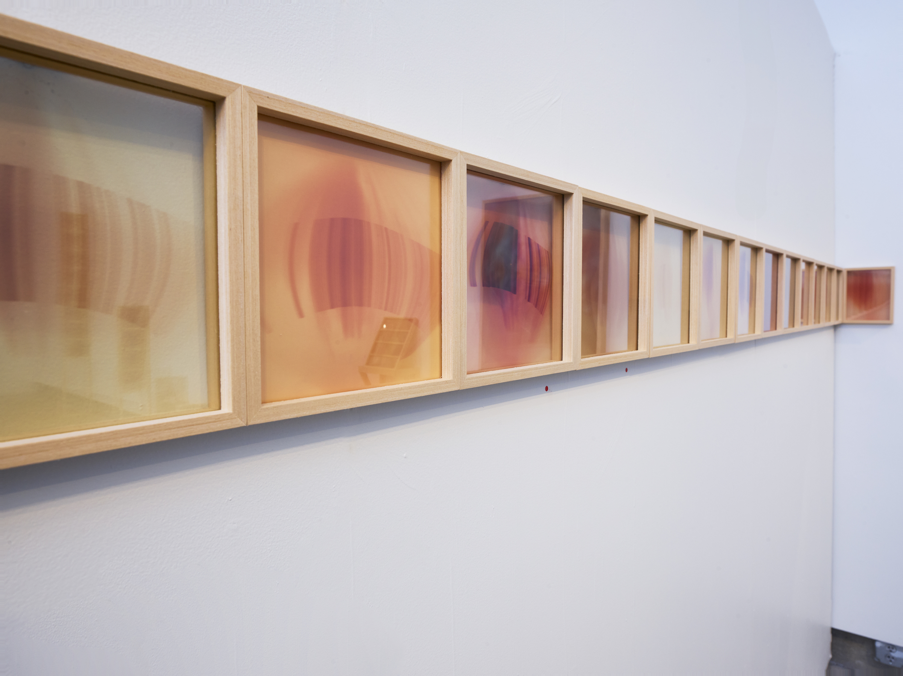
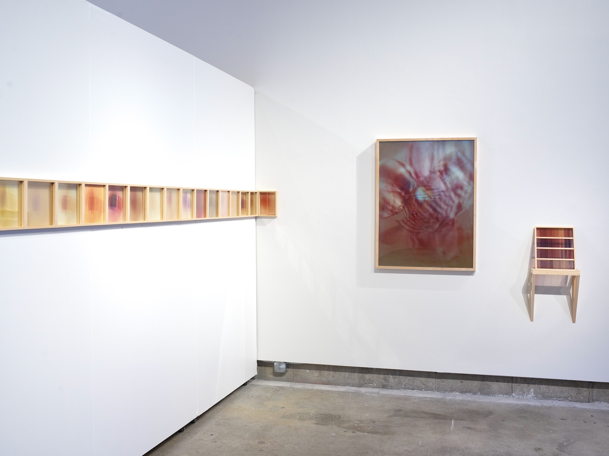
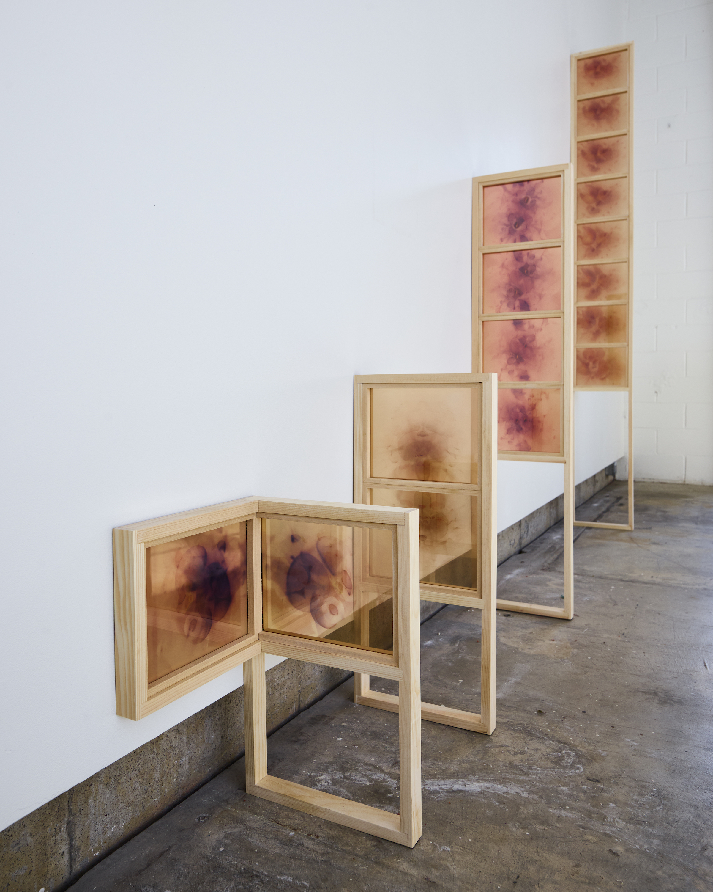
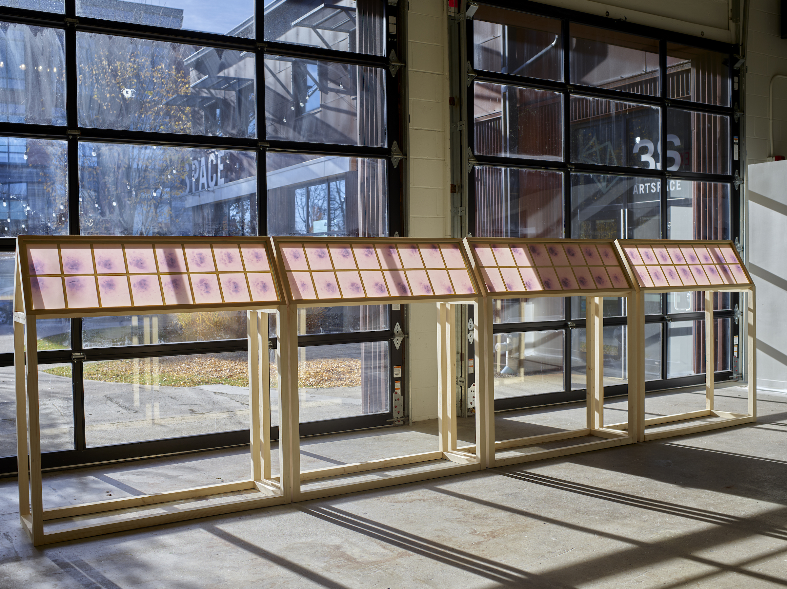
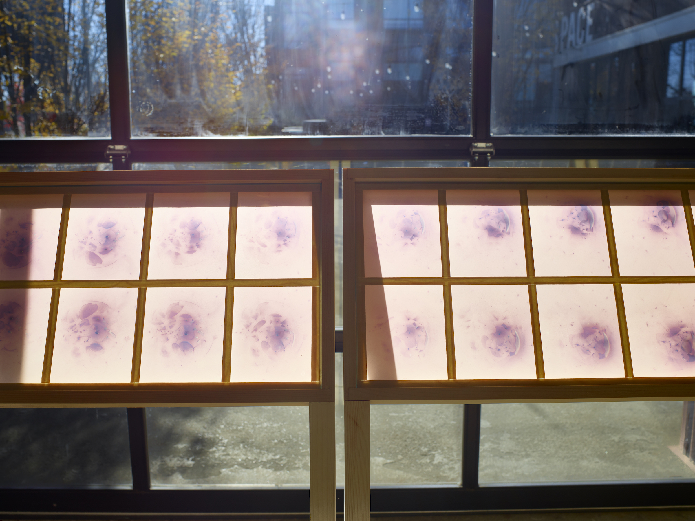

SHAINA GATES - Current work
My work is centered around the ways black and white film is able to directly visualize the dimensionality and elasticity of light and environment as color and image.
In this body of work, I'm using handmade camera-like devices to record and abserve the way sunlight moves and folds its way through space.
These "cameras" experiment with non-traditional apertures, lenses, and other refractive and focusing elements. As the sun casts its image through these stationary objects, the image continues to change--becoming "animated" by the sun's movement.

"SUNscans," sun exposure on black and white film: daily images of the sun, made using a handmade slitscan camera. (photo credit: Michael Winters, 2024)

Left to Right: "SUNscans," "Strata," & "Test Strips." (photo credit: Michael Winters, 2024)
"Strata," composite image made from 32 analogue exposures on 8"x10" black and white sheet film.

"Stacked Sequences," sequential exposures on black and white film ~ used to make stop motion animations ~ framed in wood and glass armatures. (photo credit: Michael Winters, 2024)
"The Sun Makes An Image of Itself" (series), stop motion animation made from individual exposures on black and white film

"The Sun Makes An Image of Itself" (series), 64 analogue film stills, black and white film exposed to the sun, installed in wood and glass lecturns. (photo credit: Michael Winters, 2024)

Detail of installed film stills. (photo credit: Michael Winters, 2024)
"The Sun Makes An Image of Itself" (series), made from 64 film stills in above images.
 "Strata," composite image made from 32 analogue exposures on 8"x10" black and white sheet film.
"Strata," composite image made from 32 analogue exposures on 8"x10" black and white sheet film.
 "Strata (ektamatic)," composite image made from 16 exposures on black and white photographic paper
"Strata (ektamatic)," composite image made from 16 exposures on black and white photographic paper